¿Quien es?
Satoru Gojo (五条悟 Gojō Satoru) es uno de los personajes de la serie manga Tokyo Metropolitan Curse Technical School y uno de los protagonistas de la serie secuela, Jujutsu Kaisen. Conocido con el apodo de El Chamán Más Fuerte (最強の呪術師 Saikyō no Jujutsu-shi), es uno de los cuatro chamanes de Clase Especial, antiguo compañero de Suguru Geto y Shoko Ieiri, y actual profesor del Colegio Técnico de Magia Metropolitana de Tokio, encargado de los alumnos de primer año.
omo único miembro y cabeza del Clan Gojo, es descendiente del chamán y espíritu vengativo, Sugawara-no-Michizan, y heredero de la Técnica de Maldición Ilimitada y el poder de los seis ojos. Desde el día de su nacimiento, se produjo un balance de poder entre la humanidad y las maldiciones; la caída de su clan y por ende, su muerte, significaría perder dicho balance, provocando una guerra a gran escala que sería difícil de ganar para la humanidad.
Apariencia
|
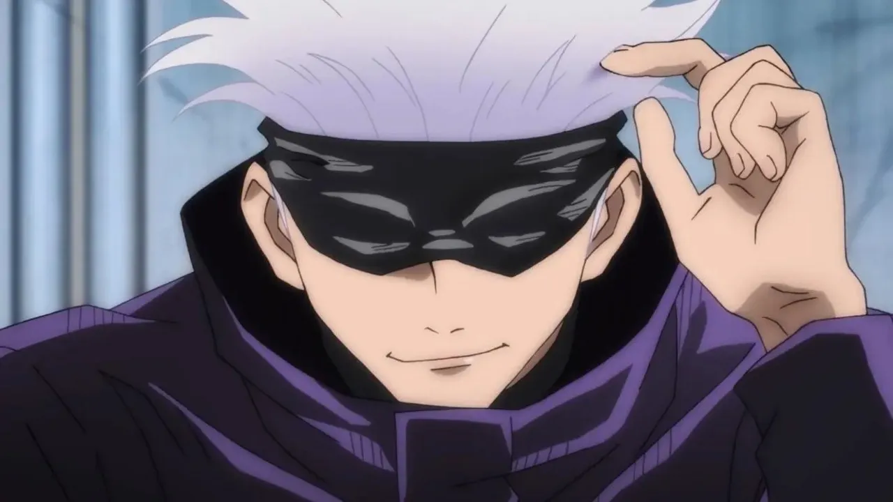
Venda de Gojo |
Satoru es un hombre delgado y bastante alto, llegando a medir 190 centímetros. Su cabello es de color blanco y suele llevarlo peinado hacía arriba con lo mechones puntiagudos cuando se encuentra ejerciendo como maestro o chamán; en sus tiempos libres, suele tener todo su cabello desarreglado y gran parte de éste tiende a caer su cara, tapando gran parte de su frente y ojos. Sus ojos son de un peculiar color azul claro y en sus iris, tiende a manifestarse una imagen similar al cielo. Es considerado atractivo por muchas mujeres.
A menudo usa una tela de color oscuro para cubrir sus ojos; mientras que, en la serie precuela Tokyo Metropolitan Curse Technical School, los ojos de Gojo están vendados con vendas blancas. Durante sus días de juventud, solía usar lentes de sol en lugar de vendas o telas.
Su vestimenta característica consiste en un abrigo negro de cuello alto, pantalones negros largos y zapatos negros; ésta misma vestimenta, en el anime, es representada en color azul marino. Al optar por vestirse de manera más informal, Gojo usa unos lentes oscuros y redondos en lugar de una venda en los ojos y vestimenta bastante casual, generalmente un camisas oscuras de mangas largas y pantalones holgados.
Cuando no está realizando misiones, viste pantalones negros holgados, una remera negra de mangas largas también holgada de cuello amplio y calzado oscuro.
Cuando era niño solía utilizar una vestimenta tradicional japonesa que consistía en un kimono y su haori tenía un patrón con formas similares a las libélulas. En otras ocasiones, utilizaba ropa casual como sudaderas de color claro y pantalones oscuros.
Personalidad
|
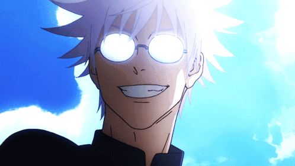
La personalidad de Gojo suele ser infantil |
Satoru es un individuo complejo, ya que generalmente, como maestro puede ser una figura de autoridad asignada para enseñar a los novatos sobre el peligroso mundo del jujutsu, pero puede ser casual, amigable y juguetón con personas como sus estudiantes y colegas, pero es indiferente y cruel con personas como los ejecutivos de los Chamanes; incluso tiene un sueño de crear a los mejores chamanes para combatir contra estos. Tiene mucha confianza en sus habilidades y reputación como un poderoso chamán. Descartando casualmente las amenazas personales de Sukuna, podría derrotar al Rey de las Maldiciones fácilmente.
Durante sus días de juventud, era una persona bastante arrogante y constantemente cuestionaba abiertamente por qué necesitaba ayudar a la humanidad. Sin embargo, tras la muerte de Riko Amanai y la desaparición de Misato Kuroi, junto con la traición de su antiguo mejor amigo Suguru Geto, hicieron que madurara enormemente.
A pesar de su actitud relajada e infantil, Satoru tiene momentos donde se vuelve serio e implacable, llegando a ser bastante despiadado al enfrentarse en combate a Maldiciones y a usuarios malditos. En su pelea contra Hanami, le rompió sus astas y lo inmovilizó para luego asesinarlo. Según Suguru Geto, Satoru solo utiliza todo su poder cuando no hay nadie cerca de él, aunque esto lo hace únicamente porque considera que son un estorbo. Tampoco tiene problemas en acabar con vidas humanas inocentes si con eso puede exorcizar a las Maldiciones. En Shibuya, a Satoru no le tembló el pulso y asesinó a mil humanos modificados. A diferencia de Kento Nanami, Satoru puede ser muy frío e indiferente con la muerte de gente inocente, aún así, él se preocupa mucho por la vida de sus estudiantes y de sus compañeros chamanes, sintiéndose culpable cuando Itadori casi muere por Sukuna.
Sin embargo, a pesar de su altivez y fuerza, Satoru es más humano de lo que parece. Después de derrotar a Toji, Satoru recuperó el cadáver de Riko con una mirada afligida, mostrando que aunque su reciente victoria engreída nubló temporalmente sus sentimientos, todavía sentía algo de dolor por su muerte. Trató de matar a los miembros de Star Religious que se reían de la muerte de Riko, aunque fue detenido por Suguru Geto, en quien confiaba como una brújula moral en ese momento, antes de tomar cualquier medida. Además, Satoru más tarde quedó visiblemente horrorizado y entró en pánico después de enterarse de que Suguru, su único mejor amigo, se había convertido en un brujo. Satoru intentó razonar con su amigo, pero finalmente se dio cuenta y aceptó que había perdido a la única persona que realmente veía como un igual. Después de tener que acabar con Suguru antes de que surgiera más calamidad, fue el trauma de Satoru por perder a su mejor amigo lo que causó su caída final en Shibuya. También estaba angustiado cuando Yuji aparentemente murió.
Satoru no teme en desafiar las normas e ir en contra de las órdenes de los altos mandos y suele actuar a sus espaldas, como cuando decide no informar que Yuji Itadori estaba vivo cuando todos pensaron que había muerto, lo que frecuentemente provoca la ira de personas como el director Gakuganji del Colegio Técnico de Magia Metropolitana de Kioto.
Habilidades
| Habilidad | Descripción | Imagen |
|---|---|---|
| Infinito | Es la forma neutral del Ilimitado. Suele crear una ilusión de que su objetivo se detiene en lugar de avanzar, sin embargo, cumple la función principal de ralentizar las cosas o a las personas. Cuando algo intenta golpear a Gojo, nunca llega a acertar y, en su lugar, golpea al infinito que separa a ambos. | 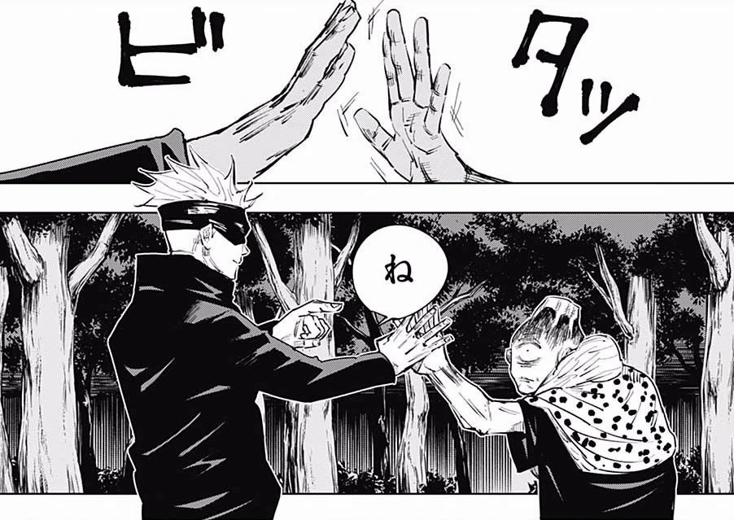 |
| Rotación Avante: Azul | Es la versión reforzada del neutral ilimitado,
en el que se amplifican los números ilimitados y
los negativos, dando lugar a la creación de
situaciones imposibles. A través de la creación
de dichas situaciones imposibles, Gojo crea un
escenario en donde el mundo mismo se ve obligado
a intentar corregirse a sí mismo y llenar el
espacio negativo, provocando que las cosas se
junten en el lugar de situaciones imposibles y
terminen generando atracción mutua.
|
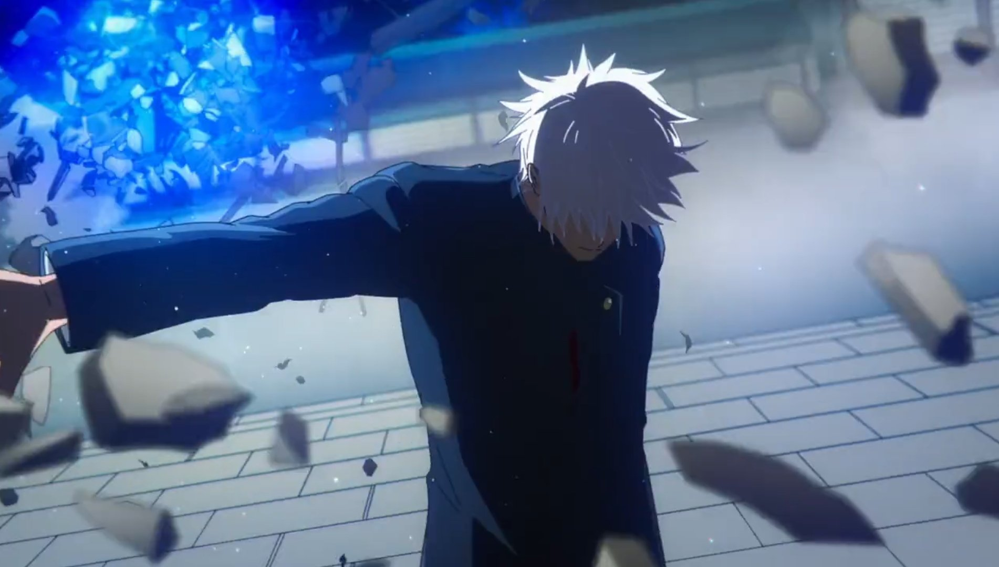 |
| Rotación Inversa: Resplandor Rojo | Es la versión opuesta a Rotación Avante: Azul. Al usar la técnica de Inversión para invertir las propiedades de Rotación Avante, Gojo activa la divergencia de su Infinito, y a su vez, hace que una técnica que atrae se convierta en una técnica que repele violentamente. Gojo tiene permitido interactuar con un vacío creando un gran vacío explosivo que repele.Al ser una habilidad que funciona con energía positiva y se forma como una técnica de maldición inversa. La habilidad tiene dos veces la capacidad de destrucción de Rotación Avante. | 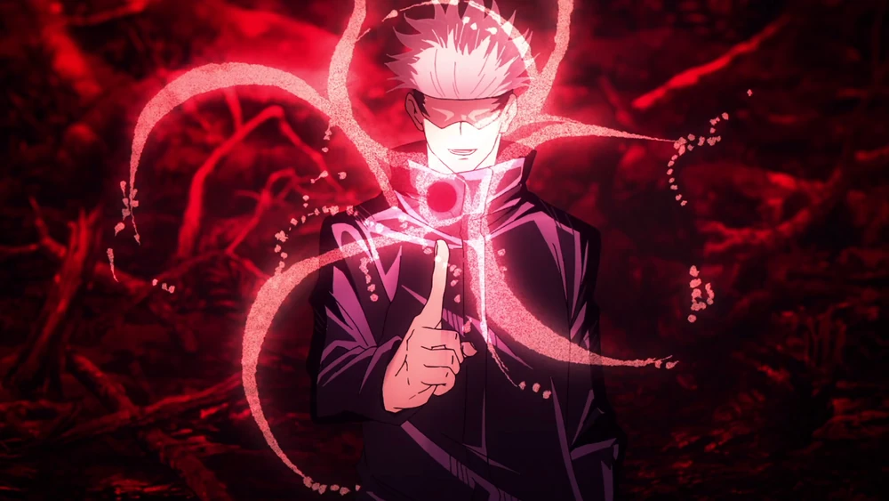 |
| Imaginaria: Púrpura | Permite que mediante el moldeo de energía maldita combinada con energía positiva se genere un choque entre ambas energía, distorsionando el espacio. Cuando Gojo chasquea sus dedos, un ataque con un poder devastador es lanzado. Esta técnica surge de la combinación de Rotación Avante y Rotación Inversa. Si Gojo no mide el nivel de su fuerza, cualquier persona u objeto puede verse envuelto en dicho ataque. | 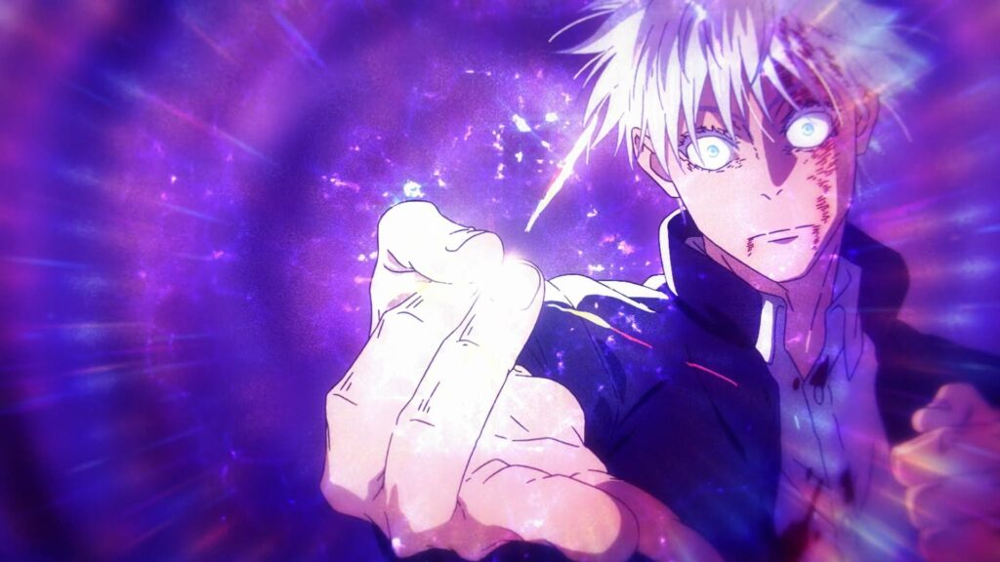 |
| Expansión Territorial: Vacío Inconmensurable | Da lugar a la formación de un espacio ilimitado que le permite a su usuario transmitirle información ilimitada a todo aquel que quede atrapado en su territorio. Complementado a la Técnica de Maldición Ilimitada, permite dejar inmóvil a su oponente, sin darle oportunidad de hacer uso de la información que recibe y queda limitado a morir lentamente. | 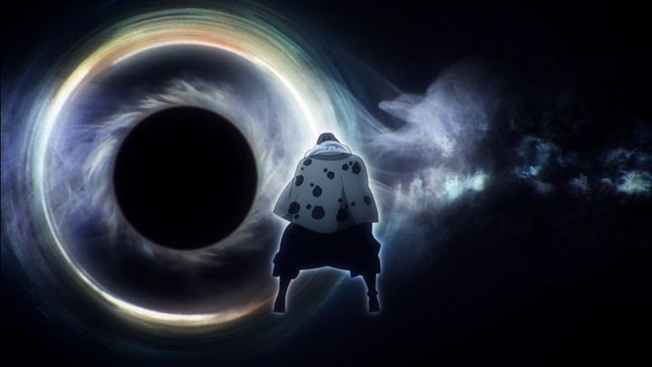 |
| Seis Ojos | No se tiene demasiada información con respecto a la habilidad de los Seis Ojos. Se tiene constancia de que desempeñan un papel en el uso preciso de la Técnica de Maldición Ilimitada y es capaz de ver más allá de lo que las personas normales suelen ver. | 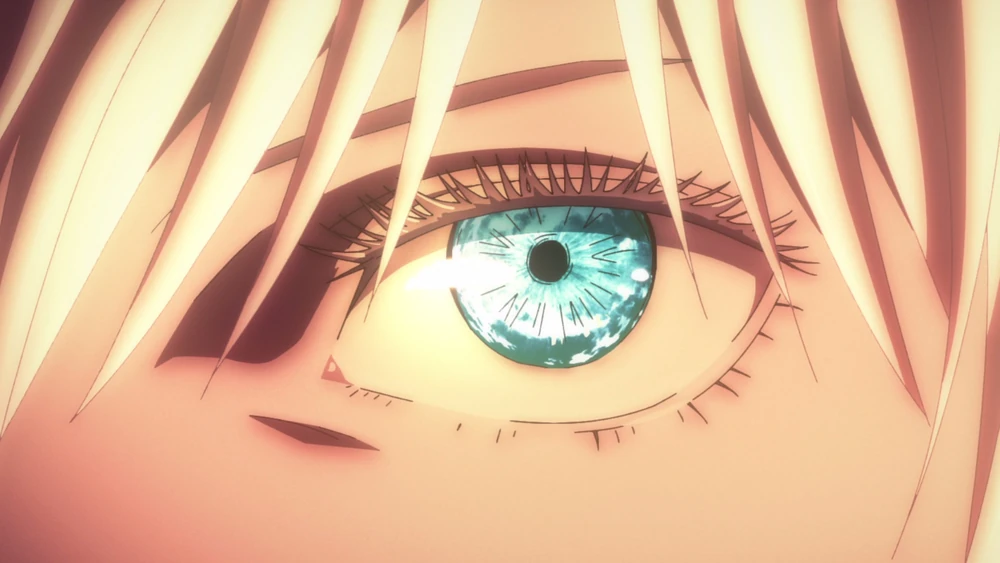 |
Imagenes de Satoru Gojo

Apariencia normal de Gojo (Anime) |
|
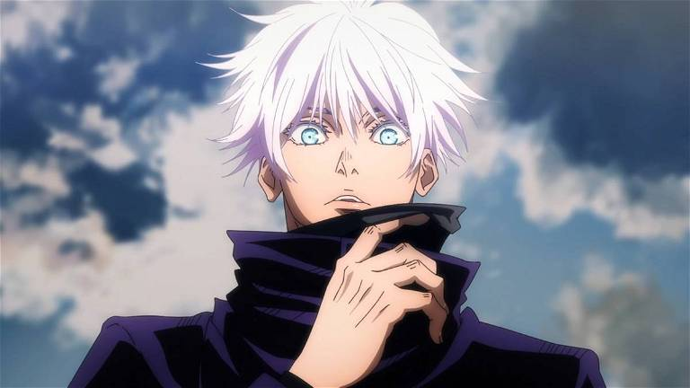
Gojo sin vendas |
|
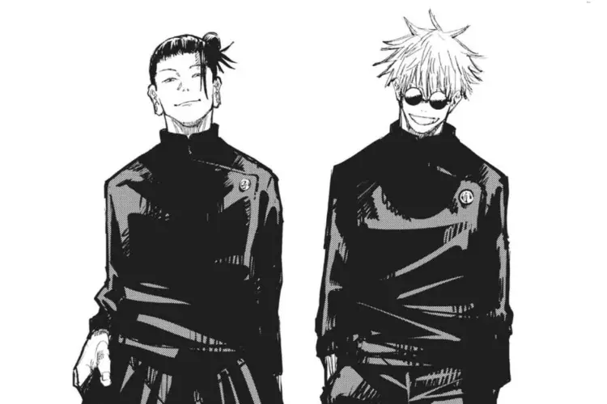
Gojo con su mejor amigo Geto |
|
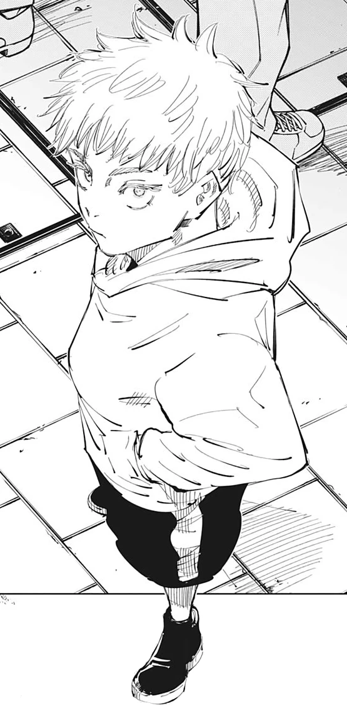
Gojo de niño (Manga) |
|
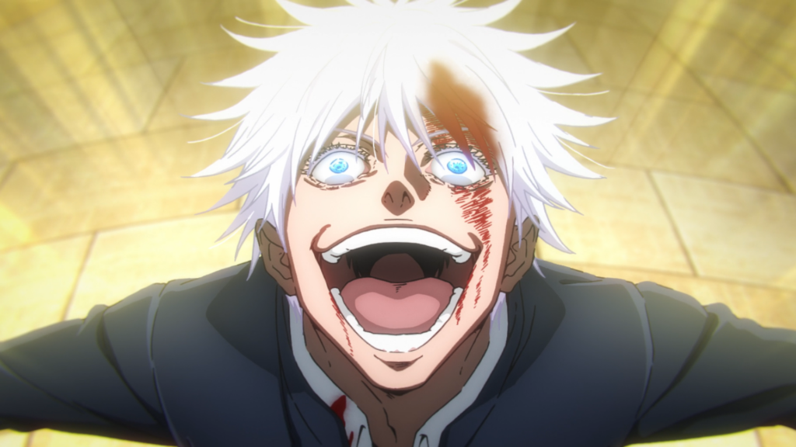
Gojo euforico despues de perder su pelea con Toji |
|
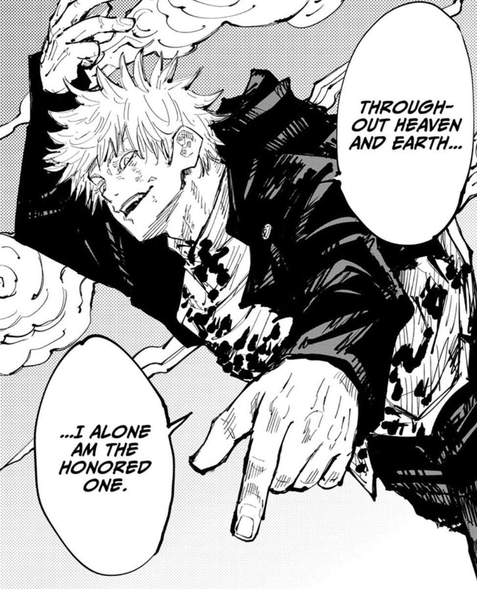
Gojo en su icónico panel de manga |
Curiosidades
- Según información revelada en el Volumen 01 del manga:
- Tiene 28 años.
- Es bastante alto (probablemente más de 1.90 centímetros).
- Su rostro se reveló regularmente durante la serie precuela, Tokyo Metropolitan Curse Technical School.
- El actual director del Colegio Técnico de Magia Metropolitana de Tokio, el Director Masamichi Yaga, fue su profesor cuando era estudiante.
- Comenzó a comer dulces para estimular su cerebro, desde entonces se volvió muy goloso.
- Puede hacer cualquier cosa que intente, por ello, trata de no involucrarse demasiado en nada. Según él, todo esto es por el bien de la próxima generación.
- Según Akutami, Gojo es bueno en los quehaceres del hogar
- Según información revelada en el Jujutsu Kaisen Official
Fanbook:
- Tiene 28 años de edad.
- Su cumpleaños es el 7 de Diciembre.
- Es un chamán de Grado Especial.
- Su método de inscripción al Colegio de Tokio fue por su linaje de sangre.
- Su técnica es la Técnica de Maldición Ilimitada.
- No tiene ningún pasatiempo ni habilidad especial ya que puede hacer de todo.
- Su comida favorita son las cosas dulces.
- Su comida menos favorita es el alcohol.
- Su causa de estrés son las acciones de los peces gordos.
- Información revelada de la entrevista con Gege
Akutami:
- Akutami dijo que cuando creó a Gojo, quería crear un personaje fuerte que fuera fácilmente distinguido.
- La primera impresión de Gojo al ver a Suguru fue "un fleco".
- A mitad del camino Akutami intenta dibujarlo atractivo.
- Gojo sigue pensando que cuidar al débil es cansador.
- Después de que Gojo recuperase el cuerpo de Riko Amanai, y frente a la Asociación de Vasijas del Tiempo le preguntó a Suguru "¿Quieres que los mate? El yo de ahora probablemente no sienta nada si lo hace", lo hizo ya que estaba usando el juicio moral de Suguru como una estimación para lo que es bueno y lo que es malvado, como si fuera su propio principio.
- Después de que Suguru se convirtiera en un usuario maldito parece haber madurado más.
- Probablemente la familia Gojo esté viva y en buen estado.
- Akutami dijo que Gojo probablemente sería bueno en ciencias, pero como él no tenía buenas calificaciones, probablemente Gojo tampoco las tiene.
- Gojo podría enseñar otras materias que no estén relacionadas con el jujutsu, pero probablemente no tiene licencia para enseñar.
- Gojo no duerme mucho.
- Akutami no puede imaginar a Gojo siendo fiel a una mujer en particular.
- Después de que Toji le hizo saber de la existencia de Megumi, Gojo fue a verlo porque estaba buscando reclutar a una persona talentosa.
- Gojo ayudó a Yuta y Yuji porque ambos eran fuertes, así que no le presta atención a ningún otro detalle externo.
- Gojo suele llamar a sus estudiantes por su nombre, pero eso no tiene ningún significado especial, no suele pensar mucho en las cosas.
- Akutami reveló que había escuchado que Gojo tiene poderes similares a los de Kakashi Hatake, personaje recurrente en el manga de Naruto y Naruto Shippuden, sin embargo ha dicho que Gojo no está realmente al mismo nivel que Kakashi. Además, para el diseño de personaje de Gojo, más que inspirarse en Kakashi, lo hizo en un supervisor que llevaba vendajes en los ojos durante la segunda etapa de los exámenes Chuunin, Tonbo Tobitake. Akutami recuerda que ese personaje dejó una gran impresión en él, tal que cuando conoció a Masashi Kishimoto, le preguntó acerca de aquel personaje pero este le respondió "¿Había un chico así..?".
- Le gusta el curry muy dulce con toneladas de manzanas y miel.